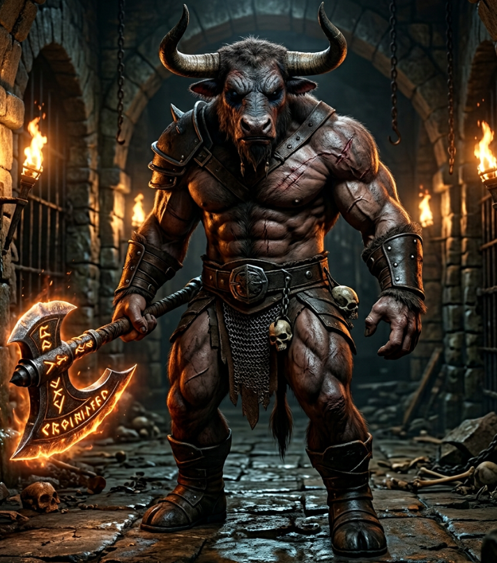
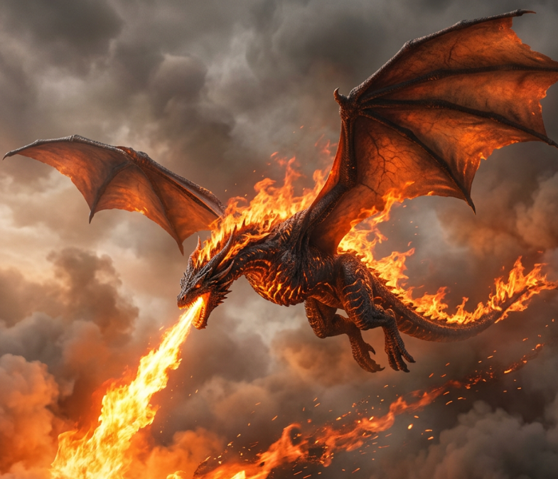
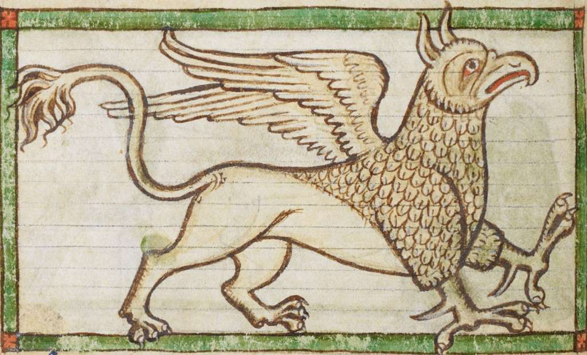
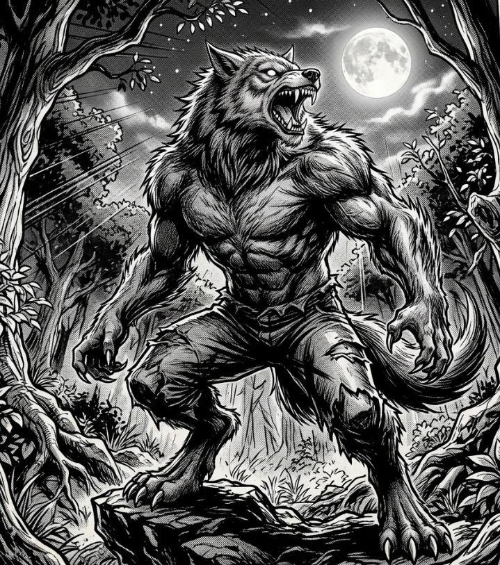
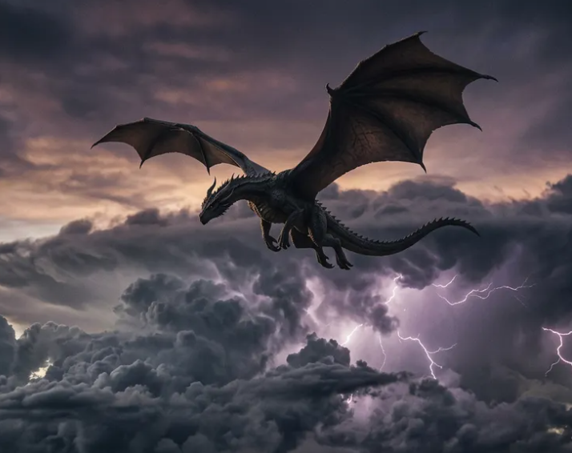
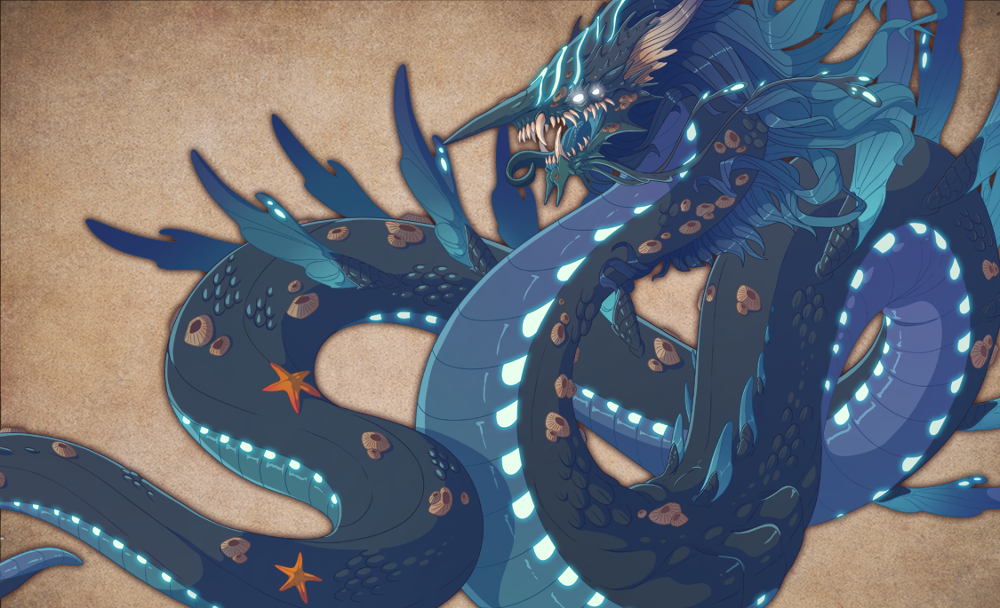

Siren
A haunting singer whose voice pulls sailors beneath the waves.
Type: Aquatic
Diet: Carnivore
Habitat: Rocky Shoals
Weakness: Sealed ears
Explore legendary creatures from across the realms
A haunting singer whose voice pulls sailors beneath the waves.
Type: Aquatic
Diet: Carnivore
Habitat: Rocky Shoals
Weakness: Sealed ears

A scarred minotaur champion who guards the deepest cells.
Type: Beast
Diet: Carnivore
Habitat: Ruined Catacombs
Weakness: Open ground

A sunborn firebird whose wings reignite at every dawn.
Type: Celestial
Diet: Sunlight
Habitat: Mountain Peaks
Weakness: Total eclipse

A powerful dragon that breathes fire.
Type: Dragon
Diet: Carnivore
Habitat: Mountains
Weakness: Ice magic

A graceful magical horse with a glowing horn.
Type: Mystic
Diet: Herbivore
Habitat: Enchanted Forest
Weakness: Dark magic
A fiery bird reborn from ashes.
Type: Mystic
Diet: Unknown
Habitat: Volcanoes
Weakness: Water

A giant sea monster lurking in deep waters.
Type: Aquatic
Diet: Carnivore
Habitat: Ocean
Weakness: Lightning

A majestic creature with lion and eagle traits.
Type: Beast
Diet: Carnivore
Habitat: Cliffs
Weakness: Poison

A cursed human transforming under the full moon.
Type: Beast
Diet: Carnivore
Habitat: Forest
Weakness: Silver

A frost-covered dragon from icy lands.
Type: Dragon
Diet: Carnivore
Habitat: Tundra
Weakness: Fire
A half-human, half-fish ocean dweller.
Type: Aquatic
Diet: Omnivore
Habitat: Coral Reefs
Weakness: Sonar

A tiny magical being with wings.
Type: Mystic
Diet: Nectar
Habitat: Forest
Weakness: Iron
A bull-headed warrior trapped in labyrinths.
Type: Beast
Diet: Omnivore
Habitat: Labyrinth
Weakness: Illusion Magic

A dragon that commands thunder and lightning.
Type: Dragon
Diet: Carnivore
Habitat: Skies
Weakness: Earth magic

A colossal sea serpent of legend.
Type: Aquatic
Diet: Carnivore
Habitat: Deep Ocean
Weakness: Light magic